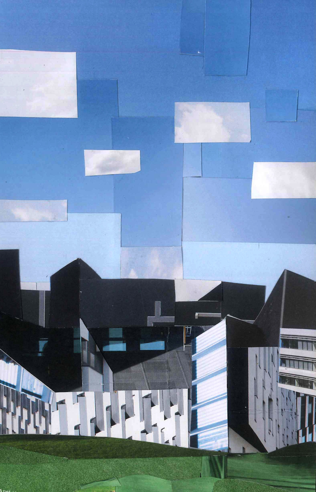

I was an
> American woman
> in an Austrian garden
> wearing shorts and a tank top
> listening to Spanish music
on a device that holds all
the world's knowledge
> with Asian, Mediterranean, and
Hungarian food in my stomach
> having soared through the air
across the Atlantic in 8 hours
to get to this continent
> with a life expectancy of 80+
now that is pretty amazing
Lindt
Location:
Materials:
Chocolate wrappers
Journal entry
After the purchase of both the slice of cheesecake and the apple strudel did not go at all as planned, I decided to pick up some reliable Lindt truffles. There was a store right next to the palace gardens I aimed to visit. During my exploration of the gardens I saw a dude walking with his headphones on looking intense as hell and I had a moment of so powerfully wishing I were the type of person who could go up to him, tap him on the shoulder and ask what he was listening to. He looked like he was about to face his nemesis or avenge someone’s death. He positioned himself right at the center of the most grand view and I started walking in that direction, hoping that by the time I got there I would have summoned the courage to make eye contact with him and motion for him to move his headphones aside. Unfortunately, or maybe fortunately, he moved on before I reached him. I’m always at war with my comfort zone, and this time fate decided the battle for me.

*Pointing*
Here we have, uh
Marcus Aurelius
Disneyland
The Vatican
And the Italian Independence Building
WU Campus
Location:
Materials:
Promotional pamphlet
Journal entry
We took the night train to Vienna! This is actually my first time ever going to a foreign country speaking none of the language with no prep beforehand, so I’ve been a bit intimidated and embarrassed to have to speak English. Also this city is so clean and stunning and empty, but beautiful, and hollow? Not quite hollow. Not sure how exactly to feel about it yet. During our free time in the afternoon I snuck into the State Hall in the Austrian National Library and avoided the eight-euro entrance fee. The trick is to wait until a group is all going inside together and merge with the pack. I’m very glad I didn’t pay that much for a ticket, although this might be a sign that my delinquency is getting out of control. I spent the evening trying unsuccessfully to track down a concert and then went to a club with some others from the program where I did not have nearly enough to drink.
My interest in
and patience for
Italian art history
hits max capacity
about an hour and a half into the lecture
Art History
Location:
Materials:
Museum tickets, bus tickets
Journal entry
I thought it would be a breeze to stay awake in art history when you’re actually there in the places seeing the work. Turns out I have never been more mistaken in my life. It’s just the same thing as back home but for three hours and standing up. Granted, some days are more interesting than others, but it’s that drowsy afternoon time slot that’s such a killer and somehow very popular for art history lecturing. At that two hour mark I always seem to lose my ability to care about the symbolism of the 400th life of Mary fresco of the day. At least I’m learning even more firmly that I am not meant to be an art history major. If this can’t engage me then absolutely nothing can.